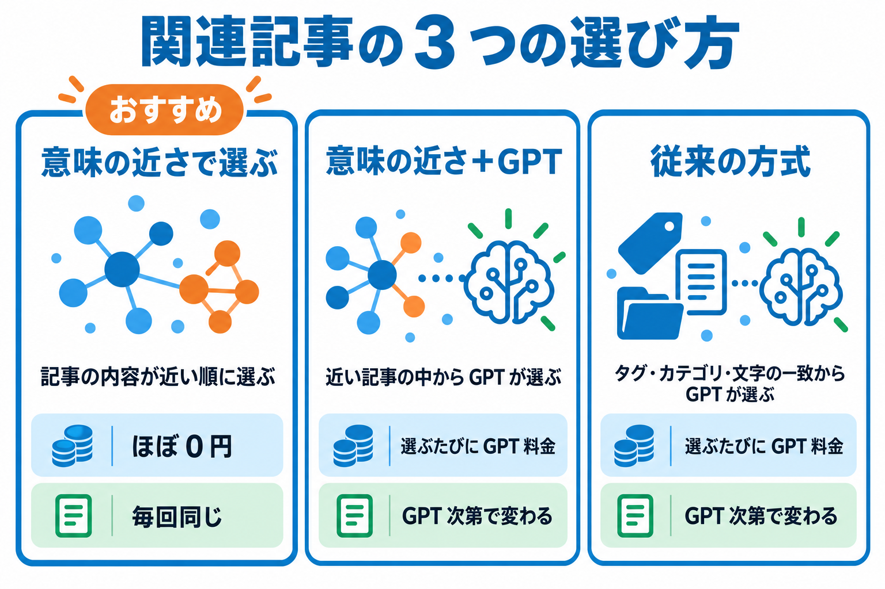

関連記事が選ばれる仕組み
このプラグインが何をもとに関連記事を選んでいるか、OpenAI をいつ使うか（費用がかかるのはどこか）を説明します。

記事を「数値（ベクトル）」に変えて比べる
「意味の近さで選ぶ」では、記事ごとに内容を表す数値の並び（ベクトル）を作ります。内容が近い記事ほど、数値も近くなります。関連記事を選ぶときは、表示している記事の数値と、候補の記事の数値を比べ、近いものから順に並べます。
| 段階 | 何をするか | OpenAI |
|---|---|---|
| ① 記事を公開・更新 | バックグラウンド（WP-Cron）でベクトルを作る予約を入れます。 | — |
| ② ベクトルを作る | 記事のタイトル・カテゴリやタグの名前・抜粋・本文（先頭 3,000 文字）を OpenAI に送り、ベクトルにします。最大 20 記事をまとめて 1 回で送ります。 | 使う（費用あり・ごくわずか） |
| ③ 記事ごとに保存 | ベクトルを記事のデータ（投稿メタ）に保存します。記事の内容が変わらない限り作り直しません。 | — |
| ④ 数値どうしを比べる | 記事が表示されたとき、保存済みのベクトルどうしをサイトのサーバーの中で比べます（コサイン類似度）。 | 使わない |
| ⑤ 関連記事に表示 | 近い順に、表示件数の分だけ並べます。結果は記事ごとに保存し（キャッシュ）、期限まで使い回します。 | 使わない |
同じ言葉がなくても選べる
たとえば「被リンクの増やし方」と「外部対策の基本」は、同じ言葉をほとんど使っていなくても内容が近いので、関連記事として選ばれます。タグやカテゴリをきちんと付けていない記事でも選べます。
関連記事の 3 つの選び方
「🤖 AIのAPI設定」タブの「関連記事の選び方」で選びます。

| 選び方 | どう選ぶか | 費用 | 結果 |
|---|---|---|---|
| 意味の近さで選ぶ（推奨） | ベクトルの近い順に選びます。 | ベクトルを作るときだけ（ほぼ 0 円） | 毎回同じ |
| 意味の近さで候補を絞り、GPT が最終的に選ぶ | ベクトルの近い記事を「表示件数＋候補数追加」件まで集め、その中から GPT が選びます。 | 選ぶたびに GPT の料金 | GPT 次第で変わる |
| 従来の方式 | タグ・カテゴリ・ディレクトリ・タイトル・抜粋の一致で候補を集め、GPT が選びます。 | 選ぶたびに GPT の料金 | GPT 次第で変わる |
GPT を使う方式でも、訪問者の表示中には GPT を呼びません
GPT の選定はバックグラウンド（WP-Cron）で記事ごとに行い、結果ができるまでは意味の近さ（従来の方式では文字の一致）の結果を表示します。同じ記事で GPT を呼ぶのは 10 分に 1 回まで、GPT でエラーが出たときは 10 分間止めます。管理画面の「関連記事を取得」で GPT をその場で使えるのは管理者だけです。
関連記事の候補になる記事
次の条件をすべて満たす記事が候補になります。
- 公開済みの記事であること（表示している記事そのものは除きます）。
- 「関連記事に選ぶ記事の範囲」（共通設定・カスタム設定の「関連記事の検索範囲」、記事ごとの「対象投稿タイプ」）でチェックした投稿タイプの記事であること。
- カテゴリにチェックを入れている場合は、そのカテゴリの記事であること（チェックなしなら全カテゴリ）。
- 意味の近さで選ぶ場合は、ベクトルが作成済みであること。比べる候補は最大 3,000 記事です。
どの設定が使われるかは「設定の優先順位と反映」を見てください。
ベクトルがまだ無い記事・APIキーが無いとき
| 状況 | どうなるか |
|---|---|
| APIキーを設定していない | タグ・カテゴリ・ディレクトリ・タイトル・抜粋の一致で関連記事を選びます。 |
| 表示している記事のベクトルがまだ無い | ベクトルができるまで、文字の一致で選んだ結果を表示します（この暫定の結果は保存しません）。管理画面で開いたときや WP-Cron の処理でベクトルを作ります。 |
| OpenAI でエラーが出た | 10 分間は OpenAI を呼ばず、文字の一致の結果を表示します（暫定の結果は保存しません）。 |
キャッシュ（選んだ結果の保存）
選んだ関連記事は記事ごとに保存し、「キャッシュ有効期限」まで使い回します。期限が過ぎると、次にその記事が表示されたときに選び直します。くわしくは「キャッシュと費用」を見てください。